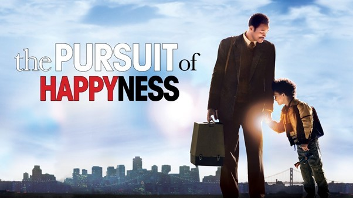

About the Movie
This movie, starring Will Smith, tells the true story of Chris Gardner—a man who faced homelessness while raising his young son and never gave up on his dreams.
Why It’s My Favorite
- Shows the strength of the human spirit
- Incredibly emotional and realistic
- Will Smith’s acting is extraordinary
Gallery
